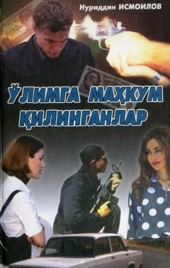

OMMaxfiy xizmat xodimining xavfli sarguzashtlari haqidagi detektiv roman.
Mazkur sarguzasht-detektiv asarda шўро davrida maxfiy xizmat tizimida ishlagan yosh o'zbek yigiti Sobirning favqulodda qiziqarli va o'ta xavfli faoliyati hikoya qilinadi. Asar voqealarida ezgulik va yovuzlik, sadoqat va xiyonat o'rtasidagi abadiy kurash aks etgan. Qahramon o'ta murakkab sharoitlarda ham o'zining mardligi va insoniy fazilatlarini saqlab qoladi.